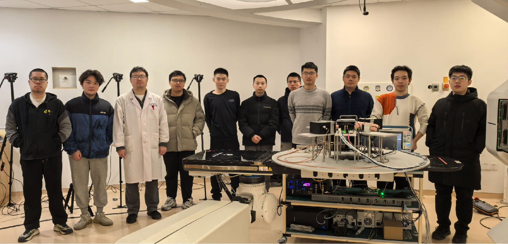
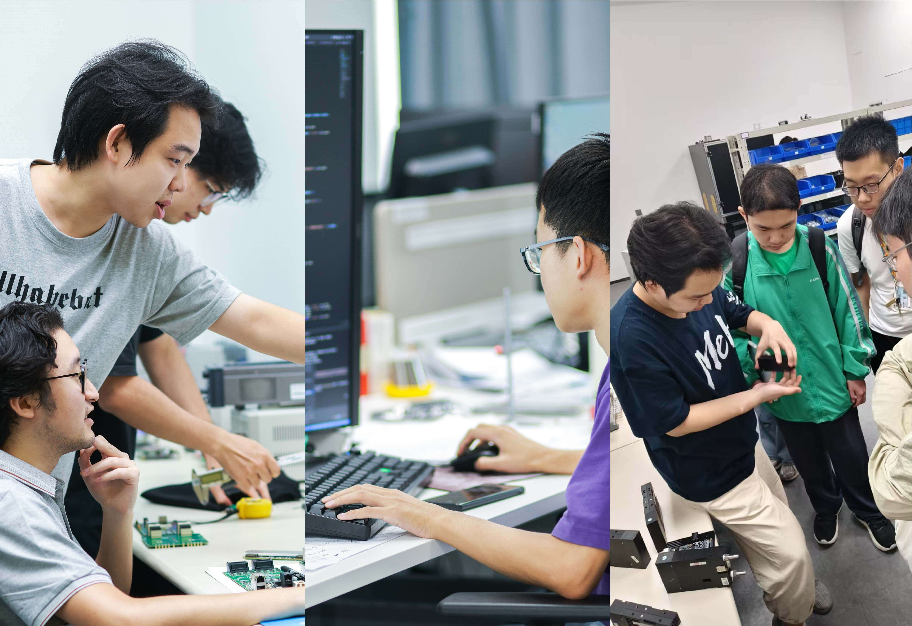

本科生实践机会项目
在数字PET实验室学习和成长的机会很多。
什么是UPOP？
本科生实践机会项目（UPOP）是华中科技大学大二学生专属的课外职业发展计划，旨在帮助他们培养在其所选职业路径上茁壮成长所需的相关且关键的专业技能，无论是在工业界、研究领域还是学术界。
导师寄语
作为数字PET专业的学生或新毕业生，在求职市场中竞争时，潜在雇主会理所当然地认为你具备技术和科学资质。但他们也在寻找能够以引人入胜的方式表达复杂理念并与从同事到投资者在内的所有人有效合作的人才。换句话说，要开发自己的潜力，学习清晰而专业地写作和演讲与任何技术技能一样重要。
谢庆国
首席研究员，教授，博士生导师
数字化探测技术与仪器开发
质子治疗监测

对于数字PET专业的学生或新毕业生而言，扎实的技术能力仅仅是基本资格要求，因为雇主通常会认为其研究和工程能力是理所当然的。区别于其他候选人的特质在于能够向非技术人员解释复杂的成像原理，并无缝协作跨团队工作。最终，精炼的专业沟通与任何技术技能一样关键，对于解锁职业潜力至关重要。
肖鹏
教授，博士生导师
数据流处理、图像重建以及智能化适应性PET系统设计
双动态PET
在数字PET等高级领域，雇主很少质疑候选人的技术专长，但他们优先考虑将技术优势转化为实际价值的能力。清晰、专业的沟通对于与临床合作伙伴互动、向评审小组展示以及协调研发工作流程而言至关重要。要将技术知识转化为现实世界的影响，提升沟通技巧的重要性不亚于精进硬技能。
万琳
教授，博士生导师
检测及成像基础框架
即插即用成像（Plug-n-Image）
UPOP提供的服务
我们帮助学生在整个寻找、获取并充分发挥其首次专业经历的过程中取得成功——无论是在工业界、学术界还是公共服务领域。我们协助学生打造出色的简历和求职信，准备面试，在与雇主和同事交流时表现出色，构建职业网络，并建立跨多个领域的导师关系，以确保他们踏上职业生涯之初就能脱颖而出。
我们通过提供以下服务实现这一目标：
- 一对一咨询 与UPOP工作人员。
- 七个秋季和春季里程碑研讨会 从基础开始（简历、求职信以及建立职业联系），逐步深入到如何在职场中取得成功（项目管理、专业沟通和个人技能）。
- 团队培训工作坊（TTW） 一个为期多天的体验式学习机会，重点在于团队合作、沟通和解决问题。
- UPOP导师网络 提供宝贵的联系和支持，分享他们自己的职业经验。
- UPOP雇主网络， 代表来自各个领域的组织，这些组织有兴趣招聘UPOP二年级学生。雇主网络成员为UPOP提供开放机会的列表，并赞助级别的成员会举办公司信息会议。我们每年在第二个和第三个TTW会话之后举行雇主网络与职业活动，仅面向UPOP社区。
- 终身访问UPOP资源！
为何加入UPOP

通过UPOP项目，您将更好地了解如何有效联系、沟通并学习来自PET领域的领先专家。
我们将帮助您启动职业生涯！在寻找实习机会、参与UPOP或公共服务时，在面试过程中以及进入所选领域后，我们将帮助您掌握成功所需的技能。这包括协助您撰写出色的简历和求职信，顺利通过面试，并有效地与雇主沟通；建立人脉网络；发展来自各个行业的导师关系；找到特定招聘UPOP二年级学生的职位发布及雇主信息；超越期望，在夏季经历中脱颖而出。
到UPOP结束时，学生将能够：
- 个性化 简历 和有说服力的求职信 并了解如何根据其预期用途进行更新。
- 有效面试能力，以争取理想职位并展现最佳状态。
- 从容驾驭社交活动并呈现精炼的电梯演讲。
- 执行目标性暑期体验, 争取实习、UPOP或公共服务经验的机会最大化。
- 增强在团队及与组织各层级中的有效沟通交流能力。
- 在时间和资源受限的环境中，领导一个结构化小组 项目规划 过程。
- 明确团队合作 的价值及其对解决问题的影响。
- 为未来雇主有效贡献力量。
UPOP项目注册学生
如何申请
无论您在寻找专业经验的过程中处于哪个阶段，您都会发现UPOP提供的学习机会对您有益，包括一对一咨询、技能培训工作坊以及深度体验式学习机会——团队培训研讨会。
UPOP学年包含三个独立课程，必须注册每一项：
- EPE秋季学期（含四个里程碑TTW）
- EPW（含团队培训研讨会）
- EPE春季学期（含三项里程碑TTW）
一旦您正式注册，实验室将提供整个UPOP学年所需的全部信息，包括课程大纲及其他重要资源。如在任何时间点有任何疑问或冲突，请随时通过邮件联系 petlab@hust.edu.cn ，UPOP团队成员乐意为您提供帮助。请记得随时光临位于401室的办公室，获取零食、咖啡或茶饮，或者预订房间进行面试或会议。
UPOP学子心声
- “UPOP帮助我提升技能，学习如何在职业环境中应用这些技能。我在沟通、演示和谈判方面获得了实操经验，这让我在工作中更加自信。” - 邱奥
- “UPOP不仅为我提供了一份出色的简历；它还给了我整个画面。从谈判技巧到领英策略再到职场不成文的规则，我知道如何充分利用手中的每一种工具。这种知识带来的信心是真实的。” - 胡文韬
- UPOP为我提供了工具，特别是在一对一导师会议中，帮助我更好地表达自己的身份和贡献方式。我真的觉得自己更有能力有效地在团队中工作了。 - 郎油东
- UPOP学生获得了一个我们许多人职业生涯中都难以得到的绝佳机会。这真是独一无二且极具价值。 - 朱婧敏
UPOP接受丰富多样的参与和赞助机会
赞助商可以获得雇主网络会员的所有免费福利，例如在学生群体中发布招聘信息，并收到参加UPOP活动的邀请。此外，我们还提供分层的企业赞助选项，包括临时事件机会和年度赞助，以便与赞助商进行更深层次的合作互动。UPOP欢迎各行业不同规模的企业来赞助。
不同于一般的华中科技大学职业招聘会及校园内信息会，由赞助商举办的UPOP活动旨在促进UPOP赞助商与学生之间的长期招聘和参与渠道。同时，这些会议也为UPOP学生提供了独家接触合作雇主的机会。
欢迎 联系我们 以询问或了解下一步骤的信息。